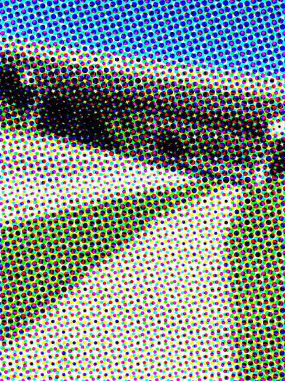
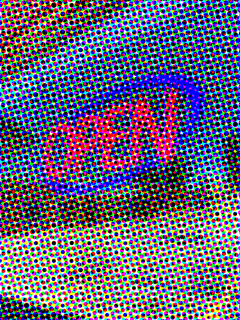
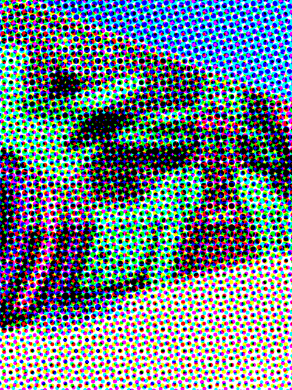
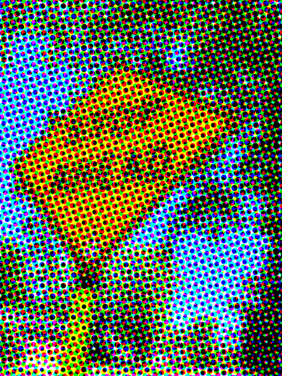
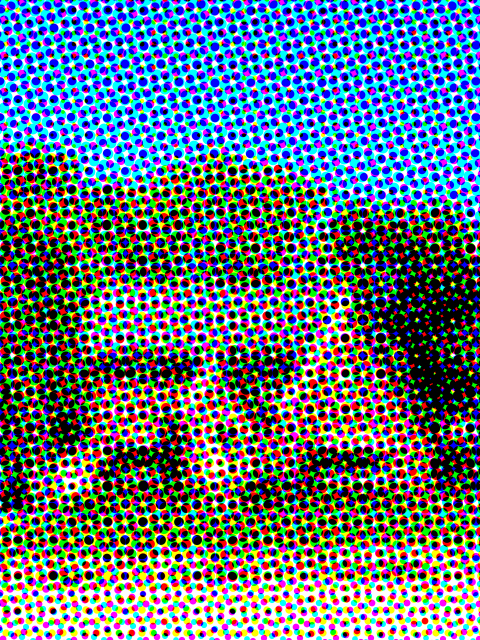
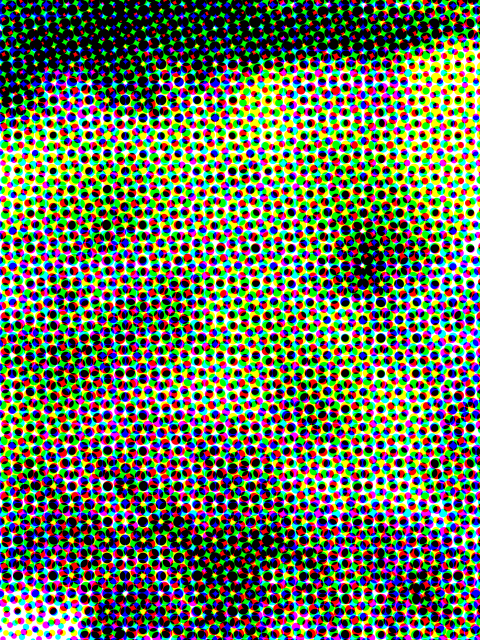
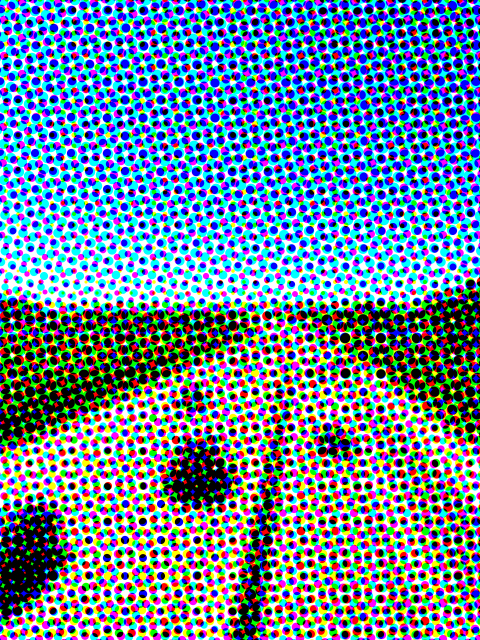

The concept is to support sustainability by encouraging walking and biking while supporting local businesses in the Village of Allouez, WI.
Research Resources include:
What is sustainability?
UCLA: What is Sustainability?
EPA Sustainability
Greener Living
EPA Environmental Topics: Greener Living
Smart Growth
What is Smart Growth?
EPA Information
I'm hoping to use the p5.js Riso Library to create halftone collage art of images seen on walks throughout the Village of Allouez. Once the images are collected and the collages are created I will be applying the designs to merch and a campaign encouraging walking in my community. The working tagline is "Walk this way."
I'm not quite sure how to code this yet.
Code Train TutorialInspiration:
p5.js Moving Text Poster       